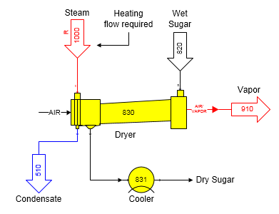
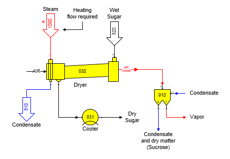

The figure below shows a sugar granulator model that uses a dryer and cooler station. Steam is used to heat the material flow in by a heat exchanger in the dryer that heats the airflow. An Output Flow Temperature (°C) value was entered for the temperature of the material flow out port 0. The steam flow in is a required flow (see the small ‘R’ on the flow line from station no. 1000 to the dryer station no. 830).

Using a dryer and cooler station to model a granulator station is best; even though, the output temperature of the dryer could be specified to equal the temperature of the sugar out of the actual granulator in the factory. However, if the model of the granulator is not constructed with a dryer and cooler station, the energy required to heat the sugar for drying will not be correct if the actual granulator consists of a heating section and a cooling section using air. The energy required for the heating section can only be calculated correctly if the temperature of the sugar leaving the heating section of the granulator is entered into the dryer Output Flow Temperature (°C) property. Energy lost to the air during cooling in a granulator is accounted for in the cooler station that follows the dryer.
In the model, the vapor flow stream out of the dryer does not contain air because the components for air are not in the Sugars program. Fifteen components are considered in Sugars, and the four gas components are: water vapor, ethanol vapor, CO2, and NH3. So, air through the dryer is not considered. Vapor from the dryer will only contain water vapor and any dry matter carried over with the vapor. The vapor can be sent to other stations to recover the dry matter that may contain sucrose if a granulator is being modeled. Usually, a separator station is used to split the dry matter (sucrose) carried over from the water vapor component. Diluent water can be used in the separator, as in a Rotoclone, to carry the dry matter to other stations for recovery of the sucrose.

The above diagram shows the granulator from the previous diagram with a separator station on the vapor flow out to strip the dry matter from the vapor after it leaves the dryer. The condensate flow (diluent flow) into the separator goes to input port 1 of the separator and is used by the separator to recover the dry matter. The combined flow of dry matter and condensate leaves the separator in output no. 2 where it can be sent to other stations in the factory for recovery of the sucrose.
Also, a dryer station will allow additional crystal growth until the output flow stream is saturated (i.e., sucrose supersaturation equals 1.0) if sucrose crystals entering the dryer have a film of supersaturated mother liquor (water).